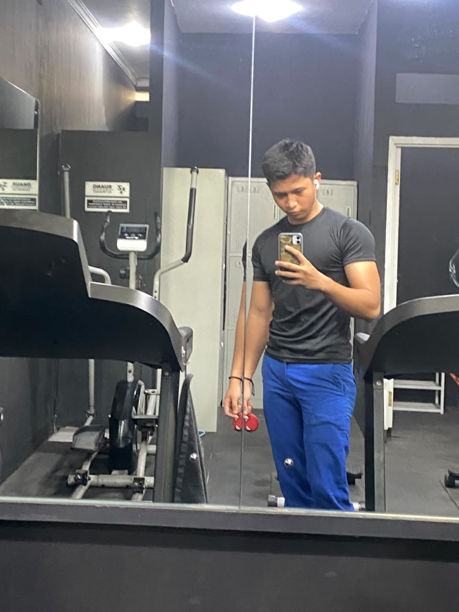

Edukasi teknologi adalah proses pembelajaran yang bertujuan untuk meningkatkan pengetahuan dan keterampilan seseorang dalam memahami, menggunakan, serta memanfaatkan teknologi secara bijak dan bertanggung jawab.
Pelajari Lebih LanjutPembelajaran mengenai perangkat keras (hardware), perangkat lunak (software), sistem operasi, serta cara menggunakan komputer dengan baik.
Pengenalan teknologi kecerdasan buatan serta cara memanfaatkannya untuk membantu kegiatan belajar, bekerja, dan berkreasi secara bertanggung jawab.
Pembelajaran mengenai cara melindungi data pribadi, menjaga keamanan akun, membuat kata sandi yang kuat, serta menghindari penipuan di internet.
Pembelajaran mengenai cara kerja jaringan komputer, koneksi internet, Wi-Fi, serta pertukaran informasi ant perangkat.
ヾ(≧▽≦*)o
ヾ(＠⌒ー⌒＠)ノ

Berkembang Baik Bukan Berkembang Biak
Nama: Syahdhan Ibnu Ishak
Kelas: XII TKJ C
Jurusan: Teknik Komputer dan Jaringan
Hobi: Lari, renang, GYM
Cita-cita: BRIMOB/PELAUT/TARUNA IMIGRASI